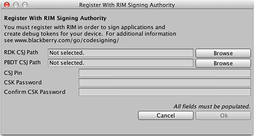
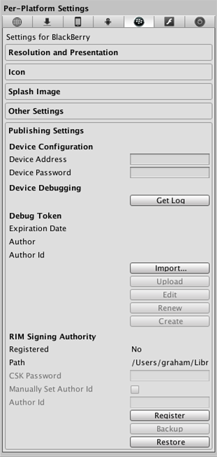
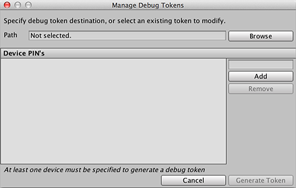
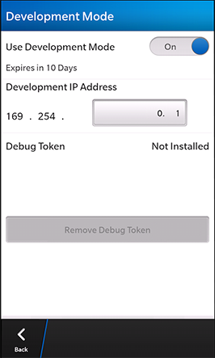

Thank you for helping us improve the quality of Unity Documentation. Although we cannot accept all submissions, we do read each suggested change from our users and will make updates where applicable.
For some reason your suggested change could not be submitted. Please try again in a few minutes. And thank you for taking the time to help us improve the quality of Unity Documentation.
To get your first project running on your Blackberry 10 device you will need to follow these steps. Note that you will need an internet connection since Unity needs to communicate with Blackberry servers.
Register with Blackberry: If you are not already registered with Blackberry you must go to https://www.blackberry.com/SignedKeys/codesigning.html and register.
4.x and prior versions of Unity: Regardless of your BlackBerry SDK level, when using Unity 4.x versions be sure to choose For BlackBerry PlayBook apps or BlackBerry 10 apps developing using a 10.1 or lower SDK or BlackBerry 10 WebWorks SDK below 2.0. You will receive one or two emails with two .csj files as attachments.
5.x versions of Unity:
The new single-file download process is supported in Unity 5.0. When using this version, select For BlackBerry 10 apps developed using a BlackBerry 10 SDK 10.2 or higher, or BlackBerry 10 WebWorks SDK 2.0 and higher, or any apps repackaged using the BlackBerry repackaging tools for Android version 1.6.1 or higher. These emails may take up to 2 hours to arrive. Part of the registration process involves creating a PIN. You will need this PIN in the next step.
Register Machine: In the Unity editor find Player Settings -> Blackberry -> Publishing and select ‘Register’. Fill out the window. Note that the CSJ Pin is the PIN you entered when registering with Blackberry, not the device PIN.

If the log file shows errors, double-check the data you entered. The password you enter (and confirm) can be any password, and is used to control access to the machine settings. (You can use ‘Restore’ to restore registration from a previous backup if you already have registered in the past. If the particular machine is already registered it should be recognized).
Create a backup: Use the ‘Backup’ button to create a backup zip file of the registration. If you fail to do this and you ever lose your registration files you will be unable to use that same account in the future.

Create a debug Token: A debug token is required to deploy to any Blackberry devices. In Player Settings->BlackBerry->Publishing Settings find Debug Token. Then select Create. Note that in Unity 5.x, an additional option Add Attached Device is present in the screenshot above. Simply connect your device via USB, input its IP address, and press the button. It will autodiscover your device’s PIN.

Specify where to save the token and specify one or more PIN(s) to use. The PIN can be found on the device under Settings->About->Hardware. Enter the PIN in the text box and then press Add. The PIN is then added to the list of PINs. Next press the Generate Token button. Unity will communicate with the Blackberry servers and then create the bar file.
Enable Development Mode: Make sure the device is in Development mode under Settings -> Security and Privacy -> Development Mode. Take note of the IP address. (This IP address assumes a USB connection between Device and Computer - if you need to use Wifi then you can get the IP from About -> Network. The phone still must be in Development Mode). This IP needs to be filled out in ‘Device Address’ in the Unity Editor. The ‘Device Password’ is the same password used to unlock the phone (the phone will force a password set when you enable development mode).

Upload debug token: You can now upload token to device (but you must fill out device IP/Password first). Once the token has been uploaded to the device you are able to build and run in the usual way.
Launching your game: Use File->Build settings. Switch to the Blackberry platform. Ensure that Build Type is set to Local and Development build is checked. Then click the Build and Run button. Unity will make the game for you, and deploy it to the device. The game should then start up on the device. You’ve now built and run your first game on your Blackberry10 device.